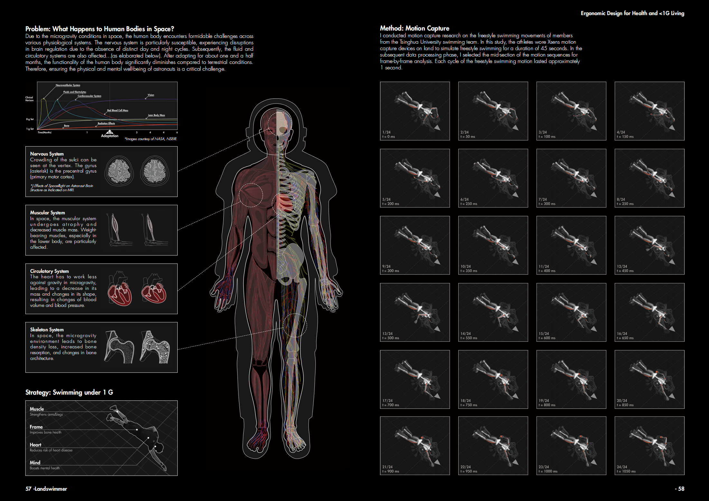
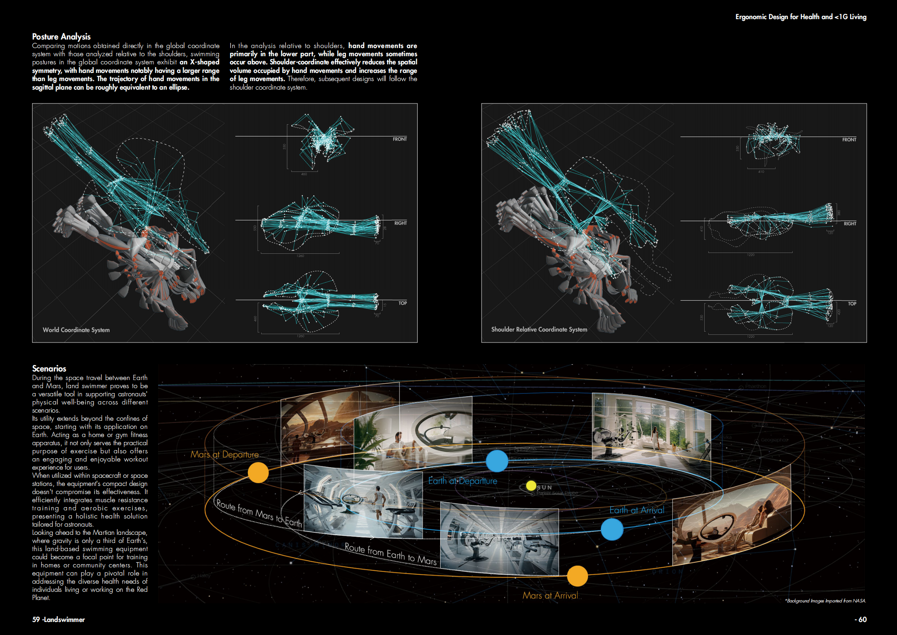
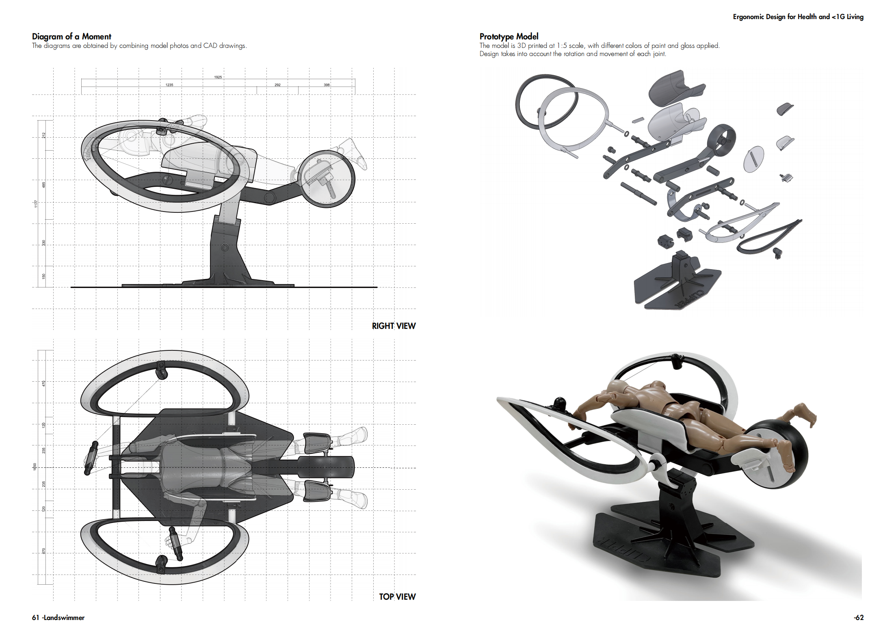
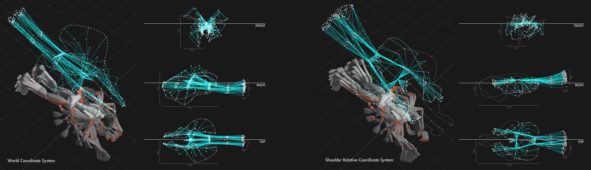
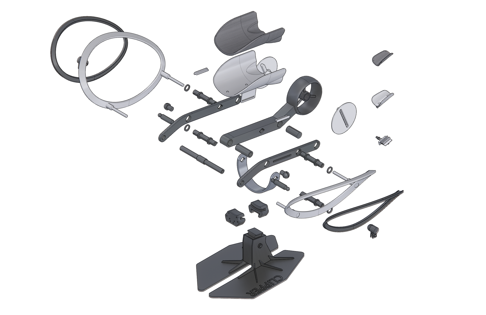
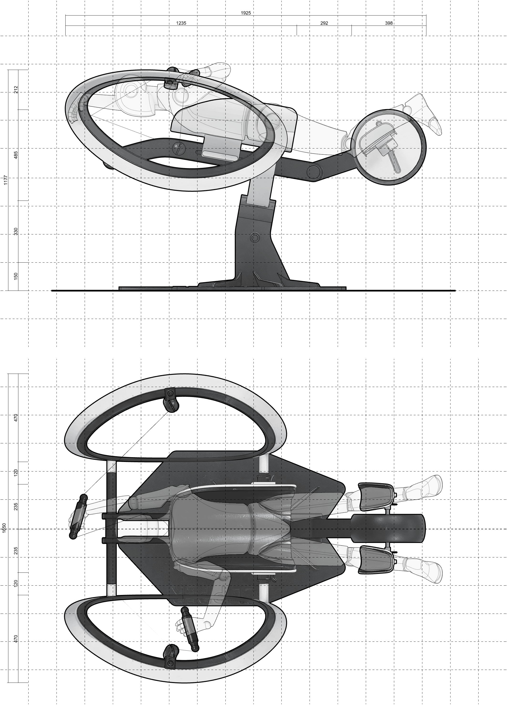
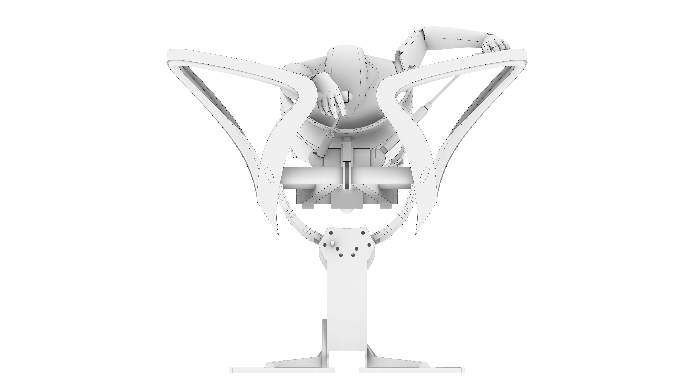
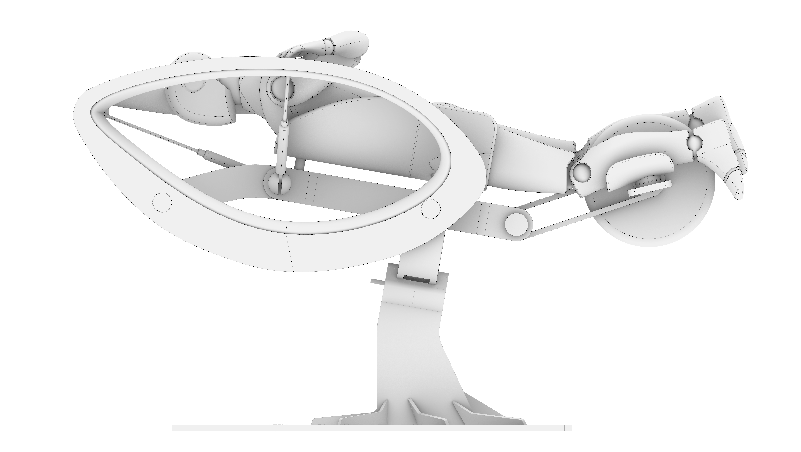
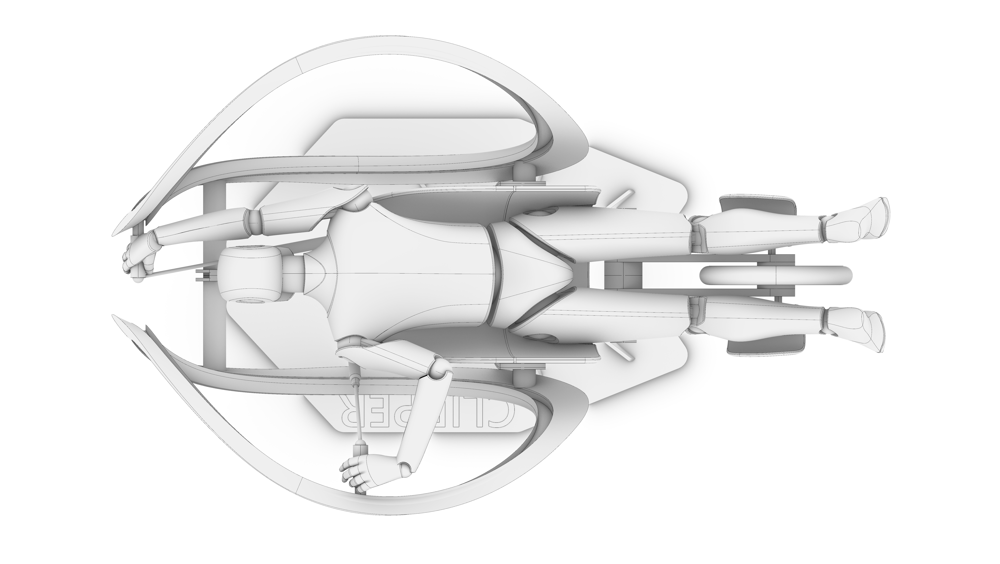

Land Swimmer (Patented)
-
项目依托于清华大学建筑学院深圳未来人居研究院院长徐卫国教授的火星居留地项目，其最初要求是为宇航员在外太空的生活设计一种适应性家具。
1.Under 1G Health
小于1G的重力环境会对人类的骨骼、肌肉、心血管系统以及体液环境都带来挑战，因此找到一种方式来维持健康是非常重要的。根据NASA目前在月球基地以及飞船上常见开展的运动类型，游泳是一种能够协调上下肢，同时增强脊柱的运动。因此本项目以外太空游泳训练器为题目，并尝试将应用场景扩展到从地球到火星的整个旅行过程中。
2.游泳姿态分析
利用姿态捕捉结果设计运动装置力学轨道；
3.Spatiotemporal Experience Journey Map
After defining the spatial themes, I integrated the four major themes into the original factory space, varying their size, shape, orientation, and material. Through this process, I mapped the trajectory of light across these spaces during different times of the day and envisioned potential human behaviors within them. This allowed me to design and orchestrate the experiential content for individuals interacting with the space.
4.Physical Model Making
I independently created a 1:100 scale physical model (approximately 1.2m long and 0.6m wide) using methods such as laser engraving on gray cardboard, post-coloring, concrete casting, and real copper sheets. This work was selected as an Outstanding Student Project by the School of Architecture at Tsinghua University. -
Design Type: Industrial Design, Product Design, Ergonomic Design, Computational Design
Project Type: Professor Xu Weiguo's research team project
Time: 2023.3-2023.4
Instructor: Prof.Xu Weiguo, Dean of School of Future Human Habitat Tsinghua SIGS
Collaborator: Individual Work
Main Contributions:
1.利用惯性动作捕捉设备对清华大学游泳队2名队员进行姿态捕捉并进行数据清洗与分析；
2.利用姿态捕捉结果设计运动装置力学轨道；
3.将运动装置原型机按照1：50比例进行3d打印并喷涂；
Patent: Junxiao, L. (2023). Training Equipment of Swimming on Dry-land (Cn. 202330543092.8). China National Intellectual Property Administration.





